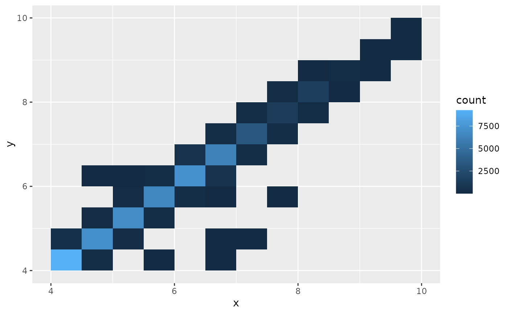
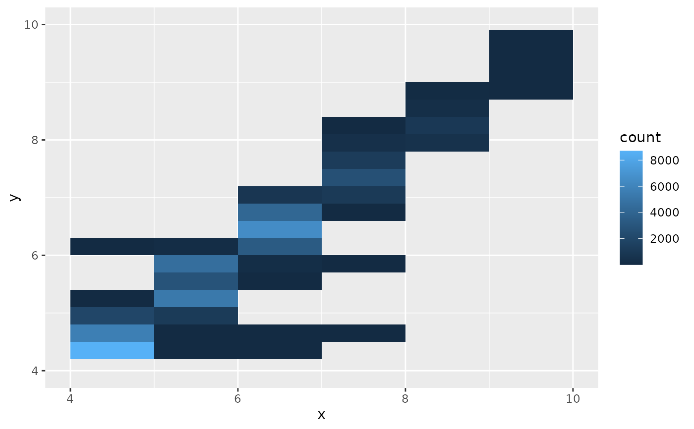

This is mostly equivalent to ggplot2::stat_bin_2d() except that the bin
edges can be copied from the scale breaks. For this effect to work properly,
you either need to use fixed scale breaks (e.g. using a vector instead of a
function), or use the breaks_cached() helper.
Usage
stat_bin_2d_auto(
mapping = NULL,
data = NULL,
geom = "tile",
position = "identity",
...,
breaks = "all",
bins = 30,
binwidth = NULL,
drop = TRUE,
na.rm = FALSE,
show.legend = NA,
inherit.aes = TRUE
)Arguments
- mapping, data, geom, position, bins, binwidth, drop, na.rm, show.legend, inherit.aes, ...
- breaks
Controls the break positions for the bins. Can be
NULL, a numeric vector, or a function as perggplot2::stat_bin(). Can additionally be a character specifying which breaks from the scale should be used:"minor"for minor breaks,"major"for major breaks, or"all"for both. This can be a scalar or a list of length 2 to control the axes separately.
Examples
library(ggplot2)
ggplot(diamonds, aes(x, y)) +
scale_x_continuous(limits = c(4, 10)) +
scale_y_continuous(limits = c(4, 10)) +
stat_bin_2d_auto()
#> Warning: Removed 478 rows containing non-finite outside the scale range
#> (`stat_bin2d_auto()`).

# You can control the x and y binning separately:
ggplot(diamonds, aes(x, y)) +
scale_x_continuous(limits = c(4, 10)) +
scale_y_continuous(limits = c(4, 10)) +
stat_bin_2d_auto(breaks = list("major", NULL), bins = list(NULL, 20))
#> Warning: Removed 478 rows containing non-finite outside the scale range
#> (`stat_bin2d_auto()`).
#> Warning: Removed 2 rows containing missing values or values outside the scale range
#> (`geom_tile()`).
